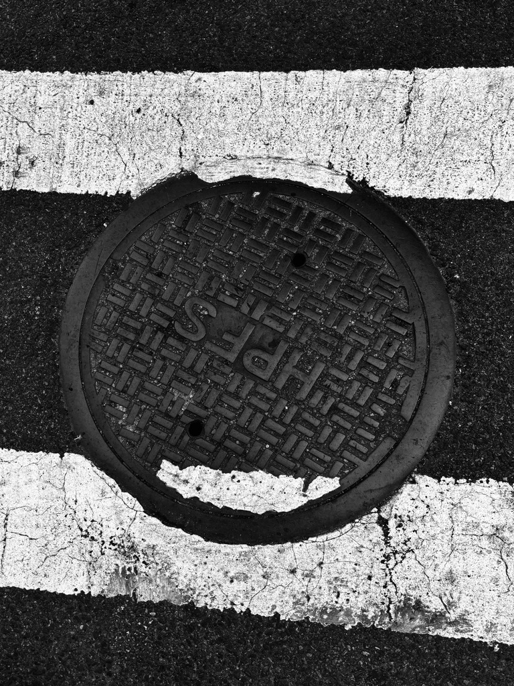

Origins of the Manhole
The first manholes appeared in the 1800s to provide access to newly built sewer systems. Each iron cover was cast in foundries across New York, stamped with unique lettering and patterns. They were functional objects, yet each one carried a quiet sense of identity — a record of the city’s early industrial craftsmanship.